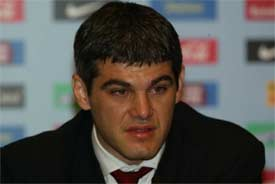
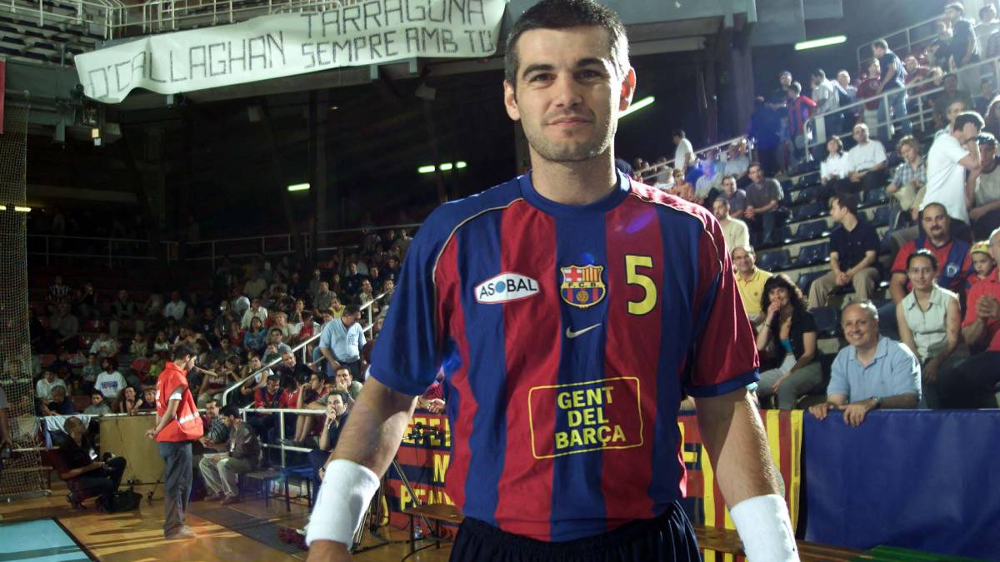

Inicio
Retiro

El jugador de balonmano del Barcelona Enric Masip ha anunciado hoy entre lágrimas su retirada de la práctica activa de este deporte, tras haber ganado ayer la Copa del Rey, su título número 53, lo que le convierte en un mito del balonmano azulgrana y mundial. Una lesión en la espalda que arrastra desde hace tres años, y que se ha agravado en los últimos meses, ha hecho decir adiós a este jugador antes de que acabe la temporada y sin poder cumplir su sueño de intentar la conquista este año del título olímpico con la selección española en los Juegos de Atenas. "No quiero arrastrarme por las pistas", ha afirmado.
El jugador ya había comunicado hace tiempo al seleccionador español, César Argilés, que no acudiría a los Juegos Olímpicos, pese a que éste le pidió que no lo hiciese público y esperase para ver si se producía una mejoría antes del verano. También comunicó su voluntad de retirarse a su entrenador, Valero Rivera, pero decidió esperar a la disputa de la Copa del Rey este fin de semana, en la que sólo jugó unos minutos durante la final disputada ayer contra el Ciudad Real. El lateral barcelonista agradeció especialmente hoy a sus compañeros el espíritu que mostraron durante los tres partidos jugados de la Copa del Rey, pese a llegar "con un equipo desfondado". 53 títulos Masip abandona el balonmano tras haber ganado 53 de los 70 títulos que ha conquistado Valero Rivera como entrenador azulgrana. Entre ellos se encuentran todos los posibles en el balonmano de clubes, incluidas seis Copas de Europa, dos Recopas de Europa, una Copa EHF, ocho ligas Asobal, seis Copas del Rey, ocho Supercopas de España y cinco Supercopas de Europa. Masip, que ha mostrado su "ilusión de seguir vinculado al club", estuvo acompañado durante la rueda de prensa de su retirada por el presidente del Barcelona, Joan Laporta, numerosos directivos del club y toda la plantilla del equipo de balonmano, con su entrenador, Valero Rivera, al frente. Laporta ha dicho que el Barcelona tiene previsto organizar un homenaje a Enric Masip y colgar su camiseta en lo alto del Palau Blaugrana.
